<!doctype html>
<html lang="ro">
<head>
<meta charset="utf-8">
<meta name="viewport" content="width=device-width, initial-scale=1, viewport-fit=cover">
<title>Misiunea Mesaj Sigur</title>
<meta name="description" content="Lecție-joc pentru clasa a VI-a: antivirus, parole și date personale, e-mail, răspuns și redirecționare, netichetă și semnele unui mesaj-capcană.">
<link rel="preconnect" href="https://fonts.googleapis.com">
<link rel="preconnect" href="https://fonts.gstatic.com" crossorigin>
<link rel="stylesheet" href="https://fonts.googleapis.com/css2?family=Sora:wght@600;800&family=Figtree:ital,wght@0,400;0,600;0,700;1,400&family=Fira+Code:wght@500;600&display=swap">
<link rel="stylesheet" href="../_motor/motor.css">
<style>
:root{
  --desk:#F1EEF3; --paper:#FFFFFF; --paper2:#F4F0F6; --line:#DCD3E0;
  --ink:#231A2A; --ink2:#66596E; --accent:#8A2F6E; --accentInk:#FFFFFF; --sel:#F2DDEA;
  --mark:#FFD9A8; --markInk:#231A2A; --ok:#1F7A4D; --okbg:#E2F3E8; --bad:#C0392B; --badbg:#FBE7E4;
  --fd:"Sora","Segoe UI",system-ui,sans-serif; --fb:"Figtree","Segoe UI",system-ui,sans-serif; --fm:"Fira Code",Consolas,monospace;
}
@media (prefers-color-scheme:dark){:root:not([data-theme="light"]){
  --desk:#151118; --paper:#1F1924; --paper2:#2A222F; --line:#3A3040;
  --ink:#EDE6F0; --ink2:#AA9DB2; --accent:#E48AC6; --accentInk:#151118; --sel:#4A2640;
  --mark:#F0B872; --markInk:#231A2A; --ok:#62CF95; --okbg:#16301F; --bad:#FF8177; --badbg:#3B1F1D;
}}
:root[data-theme="dark"]{
  --desk:#151118; --paper:#1F1924; --paper2:#2A222F; --line:#3A3040;
  --ink:#EDE6F0; --ink2:#AA9DB2; --accent:#E48AC6; --accentInk:#151118; --sel:#4A2640;
  --mark:#F0B872; --markInk:#231A2A; --ok:#62CF95; --okbg:#16301F; --bad:#FF8177; --badbg:#3B1F1D;
}
/* tema jocului: bara de adresă a unui browser, cu lacăt desenat doar din CSS */
.banda{display:flex;align-items:center;gap:10px;padding:7px 12px;font-family:var(--fm);font-size:.72rem;color:var(--ink2)}
.bb-dots{flex:none;display:flex;gap:5px}
.bb-dots i{width:9px;height:9px;border-radius:50%;background:var(--line);display:block}
.bb-dots i:first-child{background:var(--accent)}
.bb-url{flex:1 1 auto;min-width:0;background:var(--paper);border:1px solid var(--line);border-radius:999px;padding:3px 12px;white-space:nowrap;overflow:hidden;text-overflow:ellipsis}
.bb-url b{color:var(--ink);font-weight:600}
.lacat{display:inline-block;position:relative;width:8px;height:6px;margin:0 7px 0 1px;background:var(--ok);border-radius:1px;vertical-align:-1px}
.lacat::before{content:"";position:absolute;left:1px;bottom:5px;width:4px;height:4px;border:1.5px solid var(--ok);border-bottom:0;border-radius:4px 4px 0 0}
h1 .at{color:var(--accent);font-family:var(--fm);font-weight:600}
.hunt{font-family:var(--fm);font-size:.98rem}
.hunt .tk{text-align:left}
</style>
</head>
<body>
<script src="../_motor/motor.js"></script>
<script>
const LEVELS=[
{t:'Scutul calculatorului',lectii:[11],continuturi:['Măsuri de siguranță în utilizarea Internetului (de exemplu, utilizarea programelor de tip antivirus)'],text:`
<p>Pe internet circulă și programe făcute să strice. Un <mark>virus</mark> se lipește de alte fișiere și se răspândește de la un calculator la altul. Toate programele rău-intenționate (viruși, programe care fură parole sau blochează fișiere) se numesc, pe scurt, <mark>malware</mark>.</p>
<p>Ele intră cel mai des prin <strong>atașamente</strong> de la necunoscuți, prin <strong>linkuri</strong> dubioase sau prin programe descărcate de oriunde. Un fișier <code>.exe</code> este un program: dacă îl deschizi, pornește.</p>
<figure class="captura"><a href="../internet-vi/img/fisier-exe.webp" target="_blank">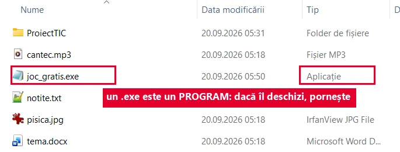</a>
<figcaption>Același folder, în Explorer: la <code>.exe</code>, coloana <b>Tip</b> spune <b>Aplicație</b>. Nu e un text, e un program.</figcaption></figure>
<p>Un <mark>program antivirus</mark> verifică (scanează) fișierele și oprește ce recunoaște ca periculos. Are nevoie de <strong>actualizări</strong>, care îi arată pericolele noi. Nici așa nu prinde tot.</p>
<figure class="captura"><a href="../internet-vi/img/antivirus-scanare.webp" target="_blank">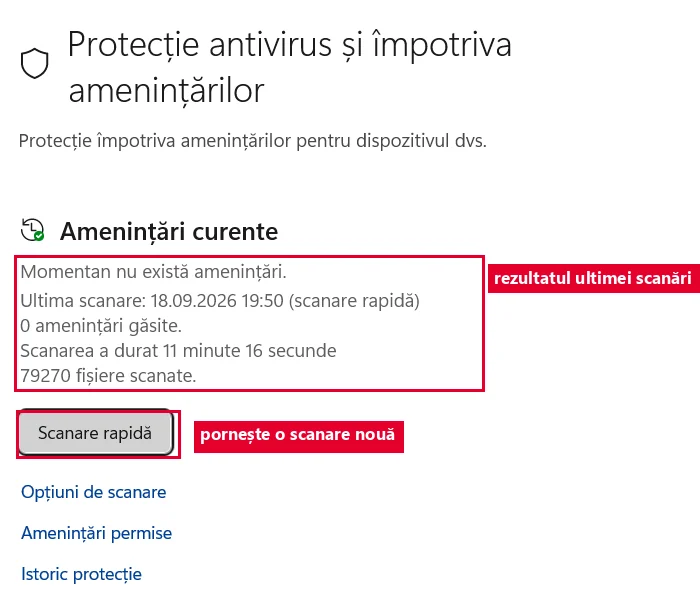</a>
<figcaption>Antivirusul din Windows: <b>Securitate Windows → Protecție antivirus și împotriva amenințărilor</b>. Butonul <b>Scanare rapidă</b> pornește o verificare, iar deasupra scrie ce a găsit ultima.</figcaption></figure>
<p>Cel mai bun scut ești tu: te oprești, te gândești și, dacă nu ești sigur, întrebi un adult.</p>`,
qs:[
 {t:'choice',q:'Cum se numesc, pe scurt, toate programele făcute să strice sau să fure?',o:['malware','antivirus','atașament','spam'],ok:0,why:'„Malware” e numele general. Virusul e doar un fel de malware, antivirusul e apărarea, iar spamul înseamnă mesaje nedorite.'},
 {t:'tf',q:'Dacă am antivirus, pot deschide liniștit orice atașament.',ok:false,why:'Antivirusul oprește doar ce recunoaște. Un program periculos nou poate trece de el, așa că atenția ta rămâne necesară.'},
 {t:'classify',q:'E un obicei sigur sau riscant?',cats:['Sigur','Riscant'],items:[['Las antivirusul să se actualizeze',0],['Deschid jocul_gratis.exe primit de la un necunoscut',1],['Instalez programe doar cu acordul unui adult',0],['Apăs pe un link trimis de cineva pe care nu-l cunosc',1],['Scanez cu antivirusul un stick adus de acasă',0]],why:'Riscant e tot ce lasă un program necunoscut să pornească: atașamente și linkuri de la necunoscuți. Actualizarea, scanarea și întrebarea unui adult te apără.'},
 {t:'match',q:'Leagă fiecare termen de ce înseamnă.',pairs:[['virus','se lipește de fișiere și se răspândește'],['malware','numele tuturor programelor rău-intenționate'],['antivirus','scanează fișierele și oprește pericolele cunoscute'],['actualizare','îi arată antivirusului pericolele noi'],['.exe','fișier care e un program și pornește']],why:'Virusul este un tip de malware. Antivirusul le ține departe doar dacă primește actualizări, iar un .exe primit de la un necunoscut e periculos pentru că pornește imediat ce îl deschizi.'},
 {t:'choice',q:'Antivirusul spune „nu am găsit nimic” despre un fișier primit de la un necunoscut. Ce faci?',o:['Tot nu-l deschid singur și întreb un adult','Îl deschid, sigur e în regulă','Îl trimit și colegilor','Opresc antivirusul'],ok:0,why:'O scanare fără probleme nu e o garanție: pericolele foarte noi pot scăpa. Decizia o iei împreună cu un adult.'}
]},
{t:'Parola și urma ta digitală',lectii:[12],continuturi:['Protecția datelor personale în comunicarea prin Internet(de exemplu, construcția și protejarea parolelor, identitatea virtuală)'],text:`
<p><mark>Datele personale</mark> sunt informațiile după care poți fi recunoscut: numele complet, adresa de acasă, telefonul, CNP-ul, fotografia. Parola, CNP-ul, adresa și telefonul rămân secrete. Într-un e-mail școlar ajung doar numele, clasa și școala.</p>
<p>O <mark>parolă puternică</mark> e lungă (cel puțin 15 caractere) și amestecă litere mari și mici, cifre și simboluri. Nu folosești aceeași parolă peste tot și nu o spui colegilor, doar părinților.</p>
<figure class="captura"><a href="../internet-vi/img/parola-slaba.webp" target="_blank">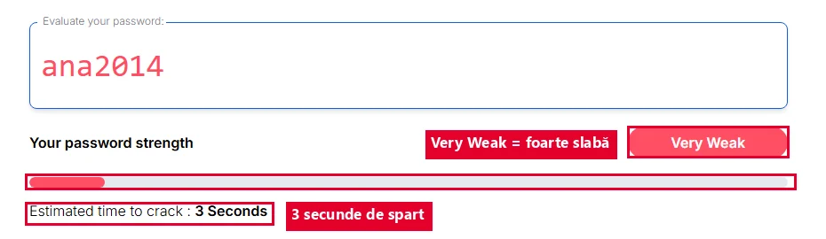</a>
<figcaption>Parola <code>ana2014</code>, într-o unealtă publică de testare: <b>Very Weak</b> (foarte slabă), spartă în <b>3 secunde</b>.</figcaption></figure>
<figure class="captura"><a href="../internet-vi/img/parola-puternica.webp" target="_blank">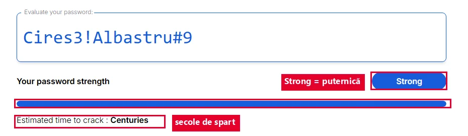</a>
<figcaption>Aceeași unealtă, altă parolă: <code>Cires3!Albastru#9</code> e <b>Strong</b> (puternică), iar timpul de spargere ajunge la <b>secole</b>. Unealta e în engleză; tu scrii parola, ea o măsoară.</figcaption></figure>
<p>Contul, poza și mesajele tale formează <mark>identitatea virtuală</mark>. Tot ce faci online lasă o <mark>urmă digitală</mark>: un mesaj trimis se copiază pe server și la cel care l-a primit. „L-am șters” înseamnă doar că l-ai șters de la tine.</p>
<p>Pe un calculator folosit de mai mulți, la final <strong>te deconectezi</strong> din cont.</p>`,
qs:[
 {t:'tf',q:'Dacă șterg un mesaj trimis, el dispare de peste tot.',ok:false,why:'Mesajul s-a copiat pe drum: pe server și la cel care l-a primit. Ștergerea îl scoate doar din căsuța ta.'},
 {t:'choice',q:'Care parolă este cea mai puternică?',o:['ana2014','12345678','Cires3!Albastru#9','parola'],ok:2,why:'E lungă și amestecă litere mari și mici, cifre și simboluri. Celelalte sunt ușor de ghicit: un nume cu un an, cifre la rând sau chiar cuvântul „parola”.'},
 {t:'classify',q:'Poți scrie asta într-un e-mail către profesorul de informatică?',cats:['Da, dacă e nevoie','Nu, rămâne secret'],items:[['numele și prenumele',0],['clasa și școala',0],['parola contului',1],['CNP-ul',1],['adresa de acasă',1],['numărul de telefon',1]],why:'Numele, clasa și școala îl ajută pe profesor să știe cine scrie. Parola, CNP-ul, adresa și telefonul nu se trimit prin e-mail, nici măcar când cineva le cere.'},
 {t:'choice',q:'Un coleg îți cere parola „doar ca să vadă ceva” în contul tău. Ce faci?',o:['Refuzi politicos: parola nu se spune colegilor','I-o spui, doar e prieten','I-o scrii pe un bilețel','Îi dai parola unui alt cont de-al tău'],ok:0,why:'Cine are parola poate intra în cont și poate scrie în numele tău. De aceea o știi doar tu și părinții tăi.'},
 {t:'match',q:'Leagă fiecare termen de ce înseamnă.',pairs:[['date personale','informații după care poți fi recunoscut'],['urmă digitală','ce rămâne după ce faci ceva online'],['identitate virtuală','cum te văd ceilalți online, după cont, poză și mesaje'],['deconectare','ieșirea din cont pe un calculator comun']],why:'Datele personale și urma digitală spun cine ești, chiar și după mult timp. Deconectarea împiedică pe altcineva să folosească contul tău.'}
]},
{t:'Contul și adresa de e-mail',lectii:[13],continuturi:['Poșta electronică (email): conturi, adresă de poștă electronică, structura unui mesaj transmis prin poșta electronică'],text:`
<p>Ca să trimiți e-mailuri ai nevoie de un <mark>cont</mark> de poștă electronică, cu o adresă și o parolă. Contul îl faci doar cu acordul și ajutorul părinților.</p>
<p>O <mark>adresă de e-mail</mark> are două părți despărțite de <code>@</code> (se citește „at” sau „arond”): <code>ana.pop@joc-mail.test</code>. În stânga e <strong>numele de utilizator</strong>, în dreapta e <strong>domeniul</strong>, adică serviciul de e-mail. Adresa nu are spații și are un singur @.</p>
<figure class="captura"><a href="../internet-vi/img/adresa-email.webp" target="_blank">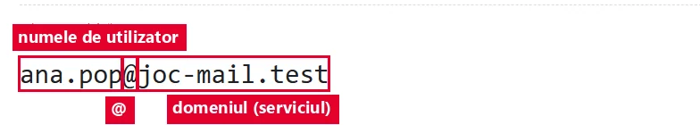</a>
<figcaption>Cele două părți ale adresei, despărțite de <code>@</code>. (Toate imaginile de la acest nivel vin dintr-o <b>cutie poștală-model</b> făcută pentru lecție, pe serviciul inventat <code>joc-mail.test</code>.)</figcaption></figure>
<p>Un mesaj are câmpurile <strong>De la</strong> (expeditorul), <strong>Către</strong> (destinatarul), <strong>Subiect</strong>, <strong>corpul</strong> mesajului și, uneori, <strong>atașamente</strong>.</p>
<figure class="captura"><a href="../internet-vi/img/mesaj-campuri.webp" target="_blank">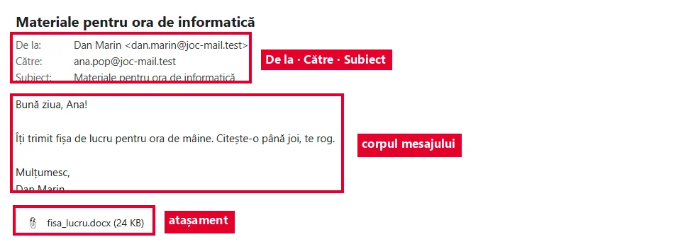</a>
<figcaption>Un mesaj deschis, cu toate părțile lui. Model pentru lecție, nu o aplicație adevărată.</figcaption></figure>
<p>Mesajele stau în dosare: <strong>Primite</strong>, <strong>Trimise</strong>, <strong>Ciorne</strong> (începute, dar netrimise) și <strong>Spam</strong> (nedorite, puse acolo automat).</p>
<figure class="captura"><a href="../internet-vi/img/dosare-mail.webp" target="_blank">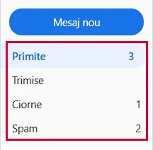</a>
<figcaption>Dosarele stau în stânga, iar cifra din dreapta arată câte mesaje sunt în ele.</figcaption></figure>`,
qs:[
 {t:'choice',q:'Care adresă de e-mail este scrisă corect?',o:['radu.ene@joc-mail.test','radu ene@joc-mail.test','radu.ene@@joc-mail.test','radu.ene.joc-mail.test'],ok:0,why:'O adresă corectă are exact un @ și niciun spațiu. Ultima variantă nu are deloc @, deci nu e o adresă de e-mail.'},
 {t:'hunt',q:'În lista clasei, câteva adrese sunt scrise greșit. Apasă pe cele greșite, apoi verifică.',src:'maria.dobre@joc-mail.test [[ioana tanase@joc-mail.test|are un spațiu în numele de utilizator]] vlad_6b@joc-mail.test [[elena@@joc-mail.test|are două @]] [[andrei.joc-mail.test|lipsește @]] sara.mihai@joc-mail.test',indiciu:'Caută spații, un @ dublu sau un @ lipsă.',why:'Un mesaj ajunge doar la o adresă cu exact un @ și fără spații. O literă greșită și mesajul pleacă spre nimeni sau spre altcineva.'},
 {t:'match',q:'Leagă fiecare câmp al mesajului de rolul lui.',pairs:[['De la','cine a trimis mesajul'],['Către','cui îi trimiți mesajul'],['Subiect','despre ce e mesajul, pe scurt'],['Corp','textul propriu-zis al mesajului'],['Atașament','fișierul trimis odată cu mesajul']],why:'Destinatarul vede întâi expeditorul și subiectul, apoi deschide corpul și atașamentele. Fiecare câmp are un rol, de aceea le completezi pe toate.'},
 {t:'classify',q:'În ce dosar găsești fiecare mesaj?',cats:['Primite','Trimise','Ciorne','Spam'],items:[['mesajul primit azi de la dirigintă',0],['mesajul trimis ieri de tine profesorului',1],['un mesaj început și netrimis',2],['o reclamă nedorită, mutată automat',3]],why:'Primite adună ce vine la tine, Trimise păstrează ce ai trimis, Ciorne ține ce n-ai terminat, iar Spam strânge automat mesajele nedorite.'},
 {t:'tf',q:'În adresa <code>ana.pop@joc-mail.test</code>, partea <code>joc-mail.test</code> este numele de utilizator.',ok:false,why:'Numele de utilizator stă în stânga lui @ (ana.pop). În dreapta e domeniul, adică serviciul de e-mail.'}
]},
{t:'Trimit, răspund, redirecționez',lectii:[14],continuturi:['Operații specifice cu mesaje electronice: deschidere, compunere, trimitere, răspuns, redirecționare, atașarea unui fișier'],text:`
<p>Un mesaj nou îl <mark>compui</mark>: scrii adresa în Către, un subiect clar, textul, apoi apeși <strong>Trimite</strong>.</p>
<p><mark>Răspunde</mark> (<em>Reply</em>) îi scrie doar expeditorului, iar subiectul primește în față <code>Re:</code>. <strong>Răspunde tuturor</strong> (<em>Reply all</em>) ajunge la toți cei din conversație.</p>
<p><mark>Redirecționează</mark> (<em>Forward</em>) trimite mesajul primit unei persoane noi, iar subiectul primește <code>Fw:</code> sau <code>Fwd:</code>. Mesajele personale ale altora nu le dai mai departe fără acordul lor.</p>
<figure class="captura"><a href="../internet-vi/img/raspunde-butoane.webp" target="_blank">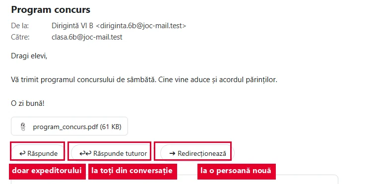</a>
<figcaption>Trei butoane, trei destinatari diferiți. Uită-te bine înainte să apeși.</figcaption></figure>
<p>Un fișier îl <mark>atașezi</mark> cu butonul în formă de agrafă. Înainte de Trimite verifici că fișierul apare în mesaj. Butoanele arată puțin diferit de la o aplicație la alta: dacă nu ești sigur, ține mouse-ul pe buton și citește eticheta.</p>
<figure class="captura"><a href="../internet-vi/img/compune-atasament.webp" target="_blank">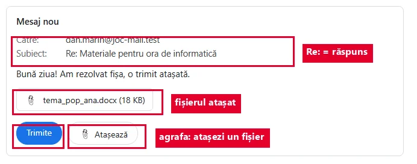</a>
<figcaption>Răspunsul în lucru: subiectul primește singur <code>Re:</code>, agrafa adaugă fișierul, iar <b>Trimite</b> se apasă la final.</figcaption></figure>`,
qs:[
 {t:'choice',q:'Dirigintele trimite un mesaj întregii clase. Vrei să-i spui doar lui că lipsești mâine. Ce apeși?',o:['Răspunde','Răspunde tuturor','Redirecționează','Mesaj nou către toată clasa'],ok:0,why:'Răspunde ajunge doar la expeditor. Cu „Răspunde tuturor” ar afla toată clasa un lucru care îl privește doar pe diriginte.'},
 {t:'choice',q:'Primești un mesaj cu subiectul <code>Fw: Program concurs</code>. Ce înseamnă <code>Fw:</code>?',o:['Mesajul a fost redirecționat','Mesajul este un răspuns','Mesajul este spam','Mesajul are un atașament'],ok:0,why:'Fw: (sau Fwd:) apare când cineva îți dă mai departe un mesaj primit de el. La un răspuns ar scrie Re:.'},
 {t:'order',q:'Profesorul ți-a scris că așteaptă tema ca fișier atașat, ca răspuns la mesajul lui. Pune pașii în ordine.',items:['Deschizi mesajul primit de la profesor','Apeși Răspunde','Apeși agrafa și alegi fișierul temei','Verifici că fișierul apare în mesaj','Apeși Trimite'],why:'Deschizi întâi mesajul profesorului, ca răspunsul să ajungă la el. Verifici atașamentul înainte de Trimite, fiindcă după trimitere e prea târziu să-l mai adaugi în același mesaj.'},
 {t:'classify',q:'Ce operație folosești în fiecare situație?',cats:['Răspunde','Răspunde tuturor','Redirecționează'],items:[['Îi mulțumești doar colegei care ți-a trimis notițele',0],['Anunți tot grupul de proiect, în conversația voastră comună, că ai terminat partea ta',1],['Îi trimiți mamei mesajul cu programul excursiei, primit de la dirigintă',2],['Îi dai unui coleg care a lipsit anunțul primit de la profesor',2],['Îi spui doar expeditorului că nu poți veni',0]],why:'Răspunde = doar expeditorul. Răspunde tuturor = toți din conversație, când îi privește pe toți. Redirecționează = o persoană nouă, care nu era în conversație.'},
 {t:'tf',q:'E în regulă să redirecționezi colegilor mesajul personal pe care ți l-a scris un prieten, fără să-l întrebi.',ok:false,why:'Mesajul era scris doar pentru tine. Îl dai mai departe numai cu acordul celui care l-a scris, altfel îi încalci intimitatea.'}
]},
{t:'Dosare, agendă și netichetă',lectii:[15],continuturi:['Dosare cu mesaje, agendă de utilizatori','Reguli de comunicare în mediul online (netichetă): formule de adresare, reguli de scriere'],text:`
<p>Când ai multe mesaje, faci <mark>dosare</mark> proprii, de exemplu „Informatică” sau „Proiect”, și muți mesajele în ele. Unele servicii le numesc <strong>etichete</strong>.</p>
<p>În <mark>agenda</mark> de contacte salvezi adresele colegilor și ale profesorilor. Când începi să scrii un nume în Către, aplicația îți propune adresa.</p>
<figure class="captura"><a href="../internet-vi/img/dosare-agenda.webp" target="_blank">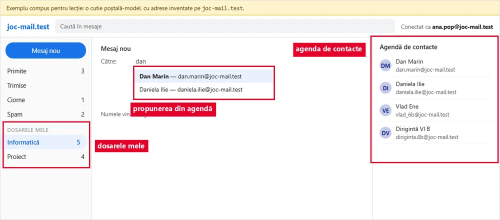</a>
<figcaption>Dosarele făcute de tine stau sub cele obișnuite. Ai scris <code>dan</code> în Către și agenda ți-a propus adresa întreagă.</figcaption></figure>
<p><mark>Neticheta</mark> înseamnă bunele maniere pe internet: salut, subiect clar, „vă rog”, „mulțumesc”, o încheiere politicoasă și fără text scris numai cu MAJUSCULE (se citește ca un țipăt).</p>
<p>Dacă cineva jignește sau amenință pe cineva online (<mark>cyberbullying</mark>), nu răspunzi cu jigniri, păstrezi dovezile (o captură de ecran), blochezi și raportezi contul care jignește, îl sprijini pe cel jignit și spui unui adult de încredere: părinților sau dirigintelui. Asta nu e pârâre, e curaj.</p>`,
qs:[
 {t:'tf',q:'Un mesaj scris numai cu MAJUSCULE e mai clar și mai politicos.',ok:false,why:'Pe internet, majusculele peste tot se citesc ca un țipăt. Le folosești la începutul propozițiilor și la nume, ca în scrisul obișnuit.'},
 {t:'hunt',q:'Mesajul lui Tudor către profesor încalcă neticheta. Apasă pe fragmentele nepotrivite.',src:'Subiect: [[(gol)|un subiect clar îi spune profesorului despre ce e vorba înainte să deschidă mesajul]] Mesaj: [[hei|unui profesor îi scrii un salut politicos, de exemplu „Bună ziua”]] [[DE CE NU MI-AȚI PUS NOTA???|majusculele și semnele multe se citesc ca un țipăt]] Am trimis tema luni, vă rog să o verificați. [[pa|la un profesor încheierea potrivită e „Mulțumesc” sau „Cu respect”]] Tudor, clasa a VI-a',indiciu:'Uită-te la subiect, la salut, la ton și la încheiere.',why:'Același conținut, cu subiect, salut, ton calm și încheiere politicoasă, primește mult mai ușor un răspuns bun.'},
 {t:'classify',q:'Cineva e jignit în grupul clasei. Ce ajută și ce face mai mult rău?',cats:['Ajută','Face rău'],items:[['Salvezi o captură de ecran cu mesajele',0],['Dai mai departe mesajul jignitor',1],['Spui dirigintelui sau părinților',0],['Răspunzi și tu cu jigniri',1],['Îi scrii colegului jignit că ești de partea lui',0],['Pui un emoji care râde',1]],why:'Dovezile, sprijinul și un adult opresc hărțuirea. Distribuirea, jignirile și râsul o fac mai mare și îl rănesc și mai tare pe colegul tău.'},
 {t:'match',q:'Leagă fiecare termen de ce înseamnă.',pairs:[['dosar','locul în care grupezi mesajele pe aceeași temă'],['agendă','lista cu adresele celor cu care comunici'],['netichetă','bunele maniere pe internet'],['cyberbullying','jignirea sau amenințarea cuiva online']],why:'Dosarele și agenda te ajută să te descurci repede în cont. Neticheta și oprirea cyberbullying-ului îi ajută pe cei cu care comunici.'},
 {t:'choice',q:'Vrei ca toate mesajele despre proiectul de informatică să fie la un loc. Ce faci?',o:['Faci un dosar „Proiect” și muți mesajele acolo','Le ștergi pe cele vechi','Le lași în Primite, printre celelalte','Le muți în Spam'],ok:0,why:'Un dosar propriu adună mesajele pe o temă, ca să le găsești repede. Spam e pentru mesajele nedorite, nu pentru ale tale.'}
]},
{t:'Mesajul-capcană',final:true,lectii:[11,12],continuturi:['Măsuri de siguranță în utilizarea Internetului (de exemplu, utilizarea programelor de tip antivirus)','Protecția datelor personale în comunicarea prin Internet(de exemplu, construcția și protejarea parolelor, identitatea virtuală)'],text:`
<p><strong>Misiunea finală.</strong> Colega ta, Maia, folosește serviciul <code>joc-mail.test</code>. A primit un mesaj care pare trimis de el, dar e o <mark>înșelătorie</mark> de tip <mark>phishing</mark>: un mesaj care vrea să-ți „pescuiască” parola sau datele.</p>
<p>Semnele: adresa expeditorului <strong>seamănă</strong> cu cea adevărată, dar nu e aceeași; te grăbește; te salută general, nu pe nume; îți cere parola; are un link spre un site cu alt nume sau un atașament ciudat.</p>
<figure class="captura"><a href="../colaborare-vii/img/mesaj-capcana.webp" target="_blank">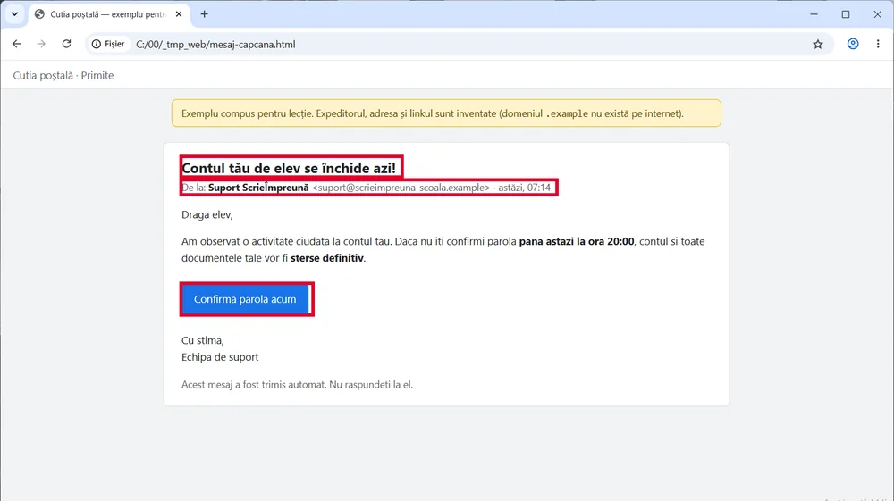</a>
<figcaption>Un mesaj-capcană adevărat arată cam așa: te grăbește, te salută general și îți cere parola. (Exemplu compus pentru lecție, cu adrese inventate.)</figcaption></figure>
<p>Serviciile adevărate nu îți cer niciodată parola prin e-mail. Nu apeși pe link, nu deschizi atașamentul, nu răspunzi. Arăți mesajul unui adult, apoi îl marchezi ca spam. Dacă ai apăsat deja, spui imediat unui adult și schimbați parola împreună, și pe orice alt cont unde era aceeași parolă.</p>`,
qs:[
 {t:'choice',q:'Ce este phishingul?',o:['Un mesaj-capcană care vrea să-ți ia parola sau datele','Un program care curăță calculatorul de viruși','Un dosar în care se mută singure mesajele vechi','Un mesaj redirecționat către toată agenda ta'],ok:0,why:'Ca la pescuit: mesajul e momeala, iar ce vrea să „prindă” sunt parola și datele tale.'},
 {t:'hunt',q:'Acesta e mesajul primit de Maia. Apasă pe toate semnele de înșelătorie, apoi verifică.',src:'De la: [[echipa@j0c-mail.test|în loc de litera o e cifra 0: adresa doar seamănă cu joc-mail.test]] Subiect: [[URGENT!!!|te grăbește ca să nu mai stai să te gândești]] [[Dragă utilizator,|serviciul tău adevărat îți știe numele]] [[contul tău va fi închis în 24 de ore.|amenințarea cu un termen scurt e un semn de înșelătorie]] [[Trimite-ne parola|niciun serviciu adevărat nu îți cere parola prin e-mail]] sau intră aici: [[joc-mail.verificare-cont.test|linkul duce pe alt site, nu pe joc-mail.test]] Atașament: [[verificare.exe|un .exe e un program și poate fi malware]]',indiciu:'Uită-te la adresă, la grabă, la salut, la ce ți se cere, la link și la atașament.',why:'Chiar și un singur semn e motiv să te oprești. Aici sunt șapte, deci mesajul e sigur o capcană.'},
 {t:'classify',q:'Ce e bine și ce e greșit să facă Maia cu mesajul?',cats:['Bine','Greșit'],items:[['Le arată mesajul părinților sau dirigintei',0],['Apasă pe link „doar ca să vadă”',1],['Răspunde cu parola, ca să nu-și piardă contul',1],['Marchează mesajul ca spam',0],['Deschide verificare.exe ca să afle ce e',1],['Le trimite mesajul tuturor colegilor, ca glumă',1]],why:'Orice gest care ajunge la link, la atașament sau la parolă îi dă înșelătorului ce vrea, iar trimiterea mai departe îi pune în pericol și pe colegi. Adultul și marcarea ca spam o apără.'},
 {t:'tf',q:'Serviciul tău adevărat de e-mail îți poate cere parola printr-un mesaj, dacă e ceva urgent.',ok:false,why:'Serviciile adevărate nu cer parola prin e-mail. Oricine o cere așa încearcă să te păcălească, oricât de urgent ar suna.'},
 {t:'choice',q:'Maia apăsase deja pe link și își scrisese parola acolo. Ce e cel mai important acum?',o:['Spune imediat unui adult și schimbă parola împreună cu el','Nu spune nimănui, de rușine','Așteaptă să vadă ce se întâmplă','Își face alt cont și îl uită pe cel vechi'],ok:0,why:'Cu cât parola e schimbată mai repede, cu atât înșelătorul are mai puțin timp să intre în cont. Se schimbă și pe orice alt cont cu aceeași parolă. O greșeală se repară mai ușor împreună cu un adult decât singur.'}
]}
];

JocMotor.porneste({
  cheie:'misiunea_mesaj_sigur_vi',
  titlu:'Misiunea Mesaj Sigur',
  marca:'Misiunea <b>Mesaj Sigur</b>',
  h1:'Misiunea Mesaj Sigur<span class="at">@</span>',
  clasa:'a VI-a',
  unitate:'VI-U2',
  unitateTitlu:'Comunic prin Internet, în siguranță',
  competente:['CS.1.3'],
  lectii:'11–16',
  intro:'Șase niveluri despre internetul sigur: antivirus, parole și date personale, adresa de e-mail, răspuns și redirecționare, dosare și netichetă. La fiecare citești o pagină scurtă și răspunzi la întrebări. La final prinzi un mesaj-capcană și îți iei diploma.',
  banda:'<span class="bb-dots"><i></i><i></i><i></i></span><span class="bb-url"><span class="lacat"></span>https://<b>joc-mail.test</b>/primite</span>',
  nivele:LEVELS,
  diploma:{
    titlu:'Paznic al căsuței de e-mail',
    rezumat:'antivirus, parole și date personale, adresa și câmpurile unui mesaj, răspuns și redirecționare, dosare, netichetă și semnele unui mesaj-capcană',
    aplicatie:'contul de e-mail folosit la școală',
    provocare:[
      'La ora de informatică sau acasă, cu ajutorul părinților, intră în contul de e-mail folosit la școală.',
      'Fă un dosar (sau o etichetă) numit „Informatică”.',
      'Adaugă în agendă adresa colegului de bancă.',
      'Scrie într-un fișier trei reguli de siguranță pe internet și salvează-l ca <code>Nume_Prenume_siguranta.txt</code>.',
      'Trimite-i colegului un mesaj cu subiect clar, salut, încheiere politicoasă și fișierul atașat. Nu scrie în mesaj parole sau date personale.',
      'Răspunde la mesajul primit de la colegul tău, mută conversația în dosarul „Informatică”, apoi deconectează-te.'
    ]
  }
});
</script>
</body>
</html>
